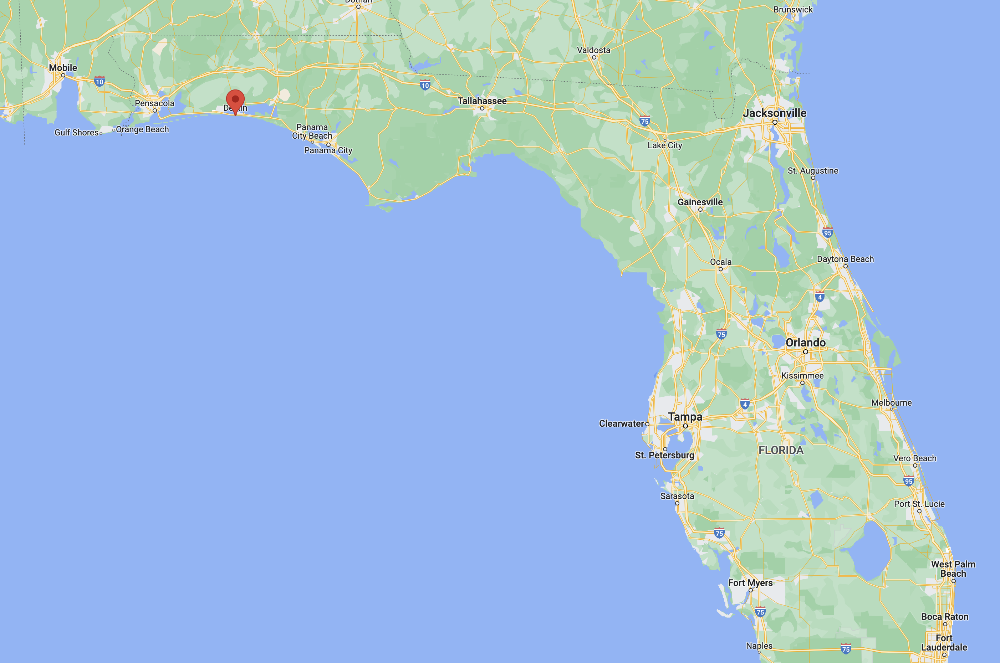

Destin is located in the Florida panhandle and it is an island. Route 93 runs through Destin on the way from Pensacola to Miami. In the image provided by Google Maps you can see Destin's location.
There are many fun things to do at Destin, here are a few that we recommend.
- Fishing - Destin is in the Gulf of Mexico so there is very good fishing during the summer.
- Waterparks - The Big Kahuna waterpark is a fantastic waterpark on the island for the days when the beach is too much of a hastle
- Golfing - Destin is known for two things, the beautiful beaches and the fantastic golf courses, make sure you book a tee time during your stay!
- Boardwalk - The Destin Harbor Boardwalk provides fun games, great shopping, and fantastic food.
- Nature Trails - The trails around Destin provide great walks and runs, as well as a nice area to walk your dogs!
- Boat Rentals - Destin Vacation Boat Rentals provides an affordable way to drive a boat on the open water around the city.
Other than those fun things, there's always the beach!
Our beaches have powder white sand and the water is emerald green, the water is usually nice and warm, and the tropical climate is perfect for a beach day! Destin is also known for its amazing boating, the waters in the gulf are nice and calm if you're near the shore and its always fun to head out on a fishing boat, anchor down, and go gulf fishing for the day! We have many private charter companies and guides that can make sure that you bring home some Snapper!